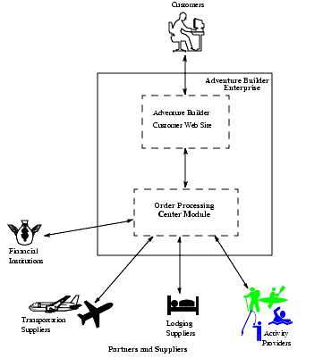
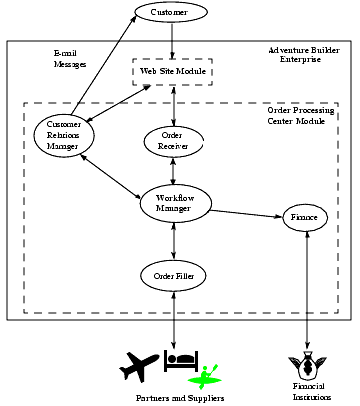
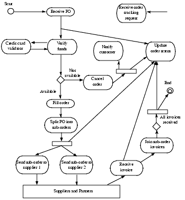
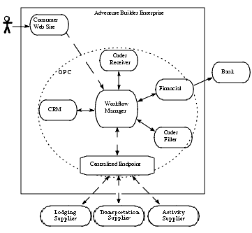

This document will briefly describe the Java Adventure Builder
Reference
application architecture. The Adventure Builder is composed of six
applications that use various J2EE technologies for implementing
Web services and
show how developers can apply these technologies. A complete
description of the architecture is discussed in the book by the Java
BluePrints team: Designing
Web Services with the J2EETM 1.4
Platform: JAX-RPC, SOAP, and XML
Technologies.
Let's start with a brief explanation of the Adventure Builder applications from a high-level perspective.
The adventure builder enterprise provides customers with a catalog of adventure packages, accommodations, and transportation options. From a browser, customers select from these options to build a vacation, such as an Adventure on Mt Kilimanjaro. Building a vacation includes selecting accommodations, mode of transport, and adventure activities, such as mountaineering, mountain biking to a hidden waterfall, and hiking the mountain. After assembling the vacation package, the customer clicks the submit order option. The customer Web site builds a purchase order and sends it to the order processing center (OPC). The order processing center, which is responsible for fulfilling the order, interacts with its internal departments, the bank(financial institution), and suppliers to complete the order.
In essence, the adventure builder enterprise consists of a front-end
customer Web site, which provides a face to its customers, and a
back-end order processing center, which handles the order fulfillment
processing. Additionally there is a bank and three suppliers. See
Figure1.

As you can see from this diagram, there many
participants in adventure builder's business process. Customers
of the adventure builder Web site
shop and place orders for vacation packages. They expect to have
certain services available to them, such as the ability to track orders
and receive e-mails about order status. Customers are expected to be
browser based. The Java Adventure Builder consists of six applications.
Each application is implemented as a J2EE apllication and the
applications interact using Web services. These applications may
be clients of a Web service and may also expose one or more Web service
endpoints. Let's briefly discuss the six applications and the Web
services they access and that they expose for other applications to
access.
Since these applications have lots of Web service endpoints, it
might
be useful to list the services that are deployed by each application.
Each Web service endpoint has a WSDL describing its service. (Note the
URL listed for the WSDL files in the tables assumes that the
application is deployed at the specified URLs, so you may need to
modify the URL for hostname and port. Just copy and paste these URLs
into a browser after deploying
the applications and you can see the
WSDL files.) Here is a table listing of all the Web services that will
be available after deploying the Java Adventure Builder:
| Application
Name |
Endpoint
Description |
WSDL
for Web service |
| Order Processing Center |
Purchase order submitting |
http://localhost:8080//webservice/PoEndpointBean?WSDL |
| Order Tracking |
http://localhost:8080//webservice/OtEndpointBean?WSDL |
|
| Centralized supplier broker |
https://localhost:8181//webservice/WebServiceBroker?WSDL |
|
| Lodging supplier |
supplier purchase order |
https://localhost:8181//webservice/LodgingPOService?WSDL |
| Activity supplier |
supplier purchase order | https://localhost:8181//webservice/ActivityPOService?WSDL |
| Transportation supplier |
supplier purchase order | https://localhost:8181//webservice/AirlinePOService?WSDL |
| Bank |
Credit card approval |
https://localhost:8181//webservice/CreditCardService?WSDL |
Since the order processing center is the core
application, let's look at it in more detail, starting with its
responsibilities for coordinating and communicating with other business
units to fulfill orders. (This document is focussed on the interactions
between the applications and the Web services, we do
not cover the design of the customer Web site in detail. See the Java BluePrints website for
additional information)
The order processing center module needs to perform the following functions:
- Receive customer orders from the customer Web site and process these orders
- Coordinate activities according to the business workflow rules
- Track an order's progress through the steps of the order fulfillment process
- Manage customer relations, including tracking customer preferences and updating customers on the status of an order. This includes sending formatted e-mails to customers about order status.
- Interact with a bank(financial institution) for verifying and obtaining approval for payment
- Interact with suppliers--airlines, hotels, and activity providers--to fulfill a customer's adventure package.
First, let's examine the order processing center by decomposing it into its logical sub-modules. Figure 2 shows the main sub-modules of the order processing center and their relationships to the other participants.
- Order Receiver--Accepts purchase orders from the customer Web site. This sub-module starts the order fulfillment processing in the back end of the enterprise. Each order is identified by a unique ID.
- Workflow Manager--Enforces the process flow rules within the adventure builder application and tracks the state of each order during its processing. The workflow manager interacts with the internal departments and coordinates all the participants in the business process.

- Finance--Interacts with external banks and credit card services that collect payments, and manages financial information.
- Customer Relations Manager (CRM)--Provides order tracking information to the customer Web site application. This sub-module also sends formatted e-mail notices about order status directly to clients.
- Order Filler--Exchanges messages with the various external suppliers to fulfill purchase orders. Messages include supplier purchase orders and invoices.
Keeping the picture of the various sub-modules in mind, let's map out the processing flow that occurs when a customer places an order. In particular, it is important to trace the messages and documents exchanged among participants.
- A purchase order flows from the customer Web site to the order processing center.
- The finance department and the credit card services exchange credit card payment requests and verifications.
- The order processing center order filler and the external suppliers exchange supplier purchase orders, invoices, and other documents.
- The workflow manager and other departments or sub-modules within the order processing center exchange internal messages.
Figure 3
shows the order fulfillment workflow. When it receives an order for an
adventure package from a customer, the order processing center persists
a purchase order. Before proceeding, it verifies that the customer has
the available funds or credit for the purchase. If not, the order
processing center cancels the order, notifies the customer, and updates
the order status. Otherwise, it proceeds to fulfill the order, which
entails breaking the entire adventure package order into sub-orders
(such as a sub-order for a hotel room, another sub-order for airline
reservations, and so forth). It sends the sub-orders to the appropriate
suppliers, who fulfill these portions of the order and return invoices.
The order processing center then joins these invoices for sub-orders so
that the entire order is invoiced. The order processing center also
updates the status of the order and notifies the -customer.
We start the examination of the order processing center architecture and design with the problem statement. We then look at the key design choices that were made to solve the problem.

The key architectural problem that the adventure builder enterprise must solve is the communication and interaction among different entities or applications, both internal and external entities. (Refer to Figure 2 which shows the lines of communication between the application entities.) These entities and applications must communicate with each other, often exchanging messages such of documents of various types across numerous boundaries, and work together in a coordinated fashion to solve particular business problems.
Let's take a closer look at the message exchanges that occur during the order fulfillment process, starting with the communication between the customer and the customer Web site, and then from that Web site to the order processing center. Such communication is fairly typical of most Web services-based applications.
- Clients or customers communicate with the customer Web site via a Web browser.
- Once a customer places an order, the customer Web site communicates a purchase order to the order processing center.
- The customer Web site also follows up with the order processing center to ascertain the current status of an order.
- The order processing center sends credit card processing details for verification to the bank credit card service.
- The order processing center sends purchase orders to suppliers
- Each supplier sends an invoice to the order processing center
- The order processing receives invoices from these suppliers.
Besides the communication with other applications, within the order processing center application, different application entities handle such functions as receiving, tracking, and processing orders. These entities need to interact with each other to coordinate the processing of an order. Other application entities handle requests for order status.
Since you are building an application that enables different entities to communicate and interact to accomplish a set of tasks, you need to make design choices that foster this interaction. These choices center around communication technologies and message formats.
1.2.1.1 Communication TechnologiesOn the J2EE platform, you can use such communication technologies as JMS, RMI/IIOP, Web services, and so forth. Each technology is appropriate for different circumstances. For each interaction among the order processing center entities, we chose a particular communication technology.
For adventure builder, we chose to use secure mutually authenticated
Web services as the
technology for communication between the order processing center and
entities external to the order processing center, such as for the
exchange of purchase orders and invoices with the bank and
suppliers. We made this choice because we are primarily interested in
achieving the greatest degree of secure interoperability among all
modules and
among all types of particpants. More information on mutual
authentication and Web services is located here.
For the interactions between the order processing center application
and the consumer Web site application, we chose to use Web
services. The order processing center module makes its services
available as a Web service to the customer Web site, and the customer
Web site application uses those services for submitting an order and
also for using the order tracking service. Due to a high
likelyhood that the consumer Web site and the order processing center
application would be co-located, mutual authenication was not used.
The adventure builder business problem involves the exchange of many different types of messages, whose payloads contain documents such as purchase orders and invoices from different suppliers. Some of these message payloads adhere to an internal format and others follow standard formats. Since the system must handle multiple message types, we use XML as the message payload format.
While we can pass information either as XML documents or as Java objects, the choice of communication technology has implications for how information is passed through the system. Primarily, we use XML documents for communication on the edges on the enterprise, especially for messages exchanged with trading partners.
But since we also use JMS internally within the order processing center, we had to choose to either pass XML documents between sub-modules or to convert documents to Java objects. Since we are modelling a document-oriented system, and since the sub-modules represent different departments, we decided to pass XML documents among them. By passing information in this format, internally each department has control over binding to the particular Java objects they need within their module. Had we bound from XML documents to Java objects at the edges of the enterprise, then this sub-module independence would not be the case. Passing XML documents also plays well for our particular architecture, which has a centralized workflow coordinator or manager that keeps the individual sub-modules and departments from directly communicating. In short, this keeps the sub-modules more loosely coupled.
Figure 4 shows the architecture of the communication infrastructure for adventure builder.

Note the following about the architecture:
- The order processing center uses a workflow manager, which contains all process rules and flow logic, to coordinate processing of the orders. The workflow manager also keeps track of the current state of each order while it is processed.
- Each participant knows its business functionality and how to execute its own step in the workflow; it does not need to know other steps in the process.
- Generally, each order processing center participant (such as the order filler) has a JMS resource and receives XML documents. The JMS resource is the integration point between the manager and each work module.
- A broker endpoint manages the interactions between the suppliers and the order processing center. Rather than having a separate Web service endpoint for each supplier and each message, all interactions between the order processing center and suppliers are grouped together and handled by a common endpoint and interaction layer.
- Other parts of the order processing center may act directly as clients to Web services without using the centralized endpoint. For example, the finance module uses the credit card service.
The order processing center internally uses a hub-and-spoke model where the workflow manager coordinates the participants in the order fulfillment process. Each participant receives an XML document from the workflow manager, processes the XML document by applying its portion of the business logic, and returns the result to the workflow manager. The workflow manager determines the next step to execute in the workflow and dispatches the appropriate request, by sending an XML document, to the proper participant. Each individual participant executes their part of the business functionality and has no need to know the overall process of the workflow.
The Web service endpoints, used on the edges of the order processing center for interactions between the order processing center and its external entities, have different considerations. You should consider each endpoint design individually, based on its particular interactions. Sometimes, to make communication more manageable, it's possible to group together sets of interactions into a simplified structure such as a service broker. (See Web Service Communication Patterns section in the full version of the Adventure Builder achitecture chapter for a discussion of more complex Web service interactions, as well as how to provide structure to Web service communications.)